Versie van 21-11, 15:3x. Alle schermen tonen proefgegevens, geen echte items. Alles staat achter een schakelaar die uit staat; met de schakelaar uit verandert er niets.
Filterrijen volgens je keuze "segmentatie ja": Onderwerp, Bouwsteen (wat levert het je verhaal op) en Bronvorm (per bron; Rapport is altijd te kiezen), plus één knop Podiumgeschikt. Op de kaart staat "Podiumgeschikt: reden". Wat het systeem niet zeker weet, staat in het uitklapblok "Te controleren" en nooit als "Onbekend".
Let op: in deze proefdata zijn 8 van de 11 kaarten podiumgeschikt, alleen om de markering te laten zien; in echte data is dat veel minder. De juistheid van de indeling wordt nog getoetst op echte berichten (TRECHTER); het eerste deel is geslaagd. Uitgewerkte kaarten worden groen volgens het Uitwerken-ontwerp dat je goedkeurde; dat komt in een volgende stap.
Sjabloon ja op de kaartweergave Triage/Inhalen (5b)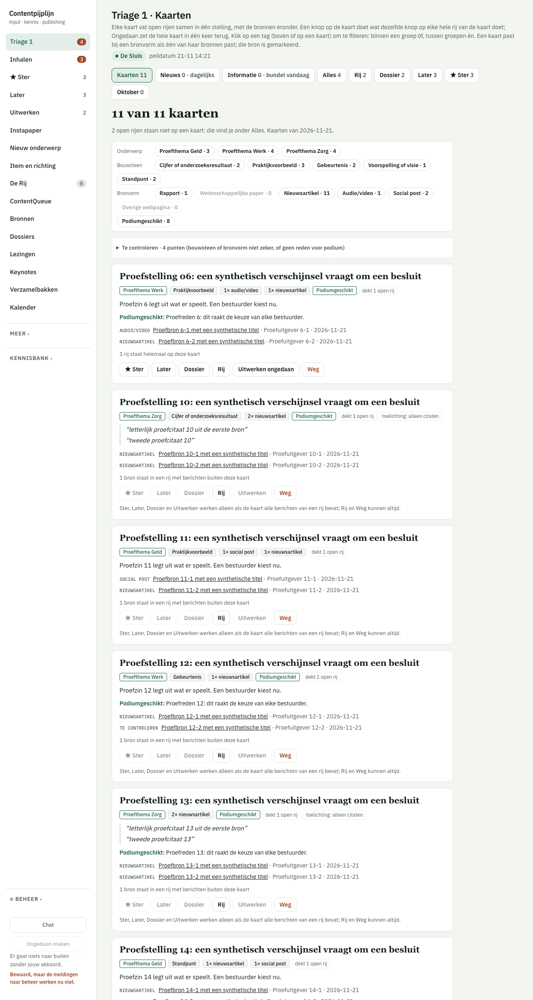
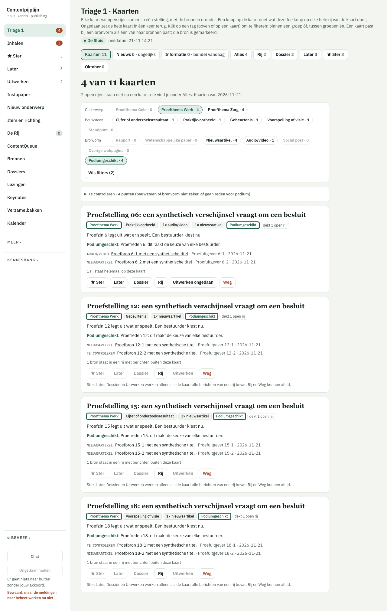
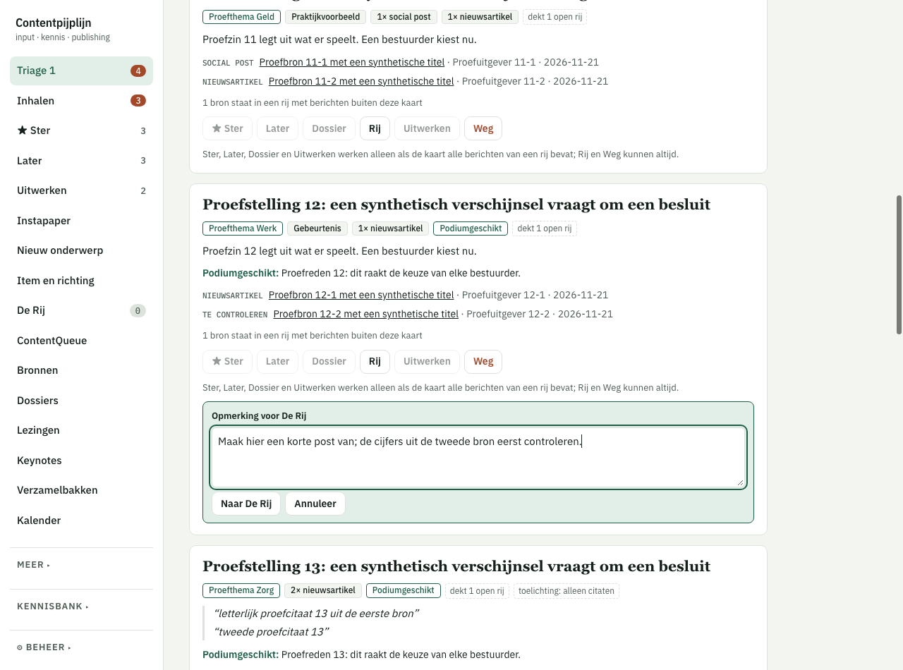
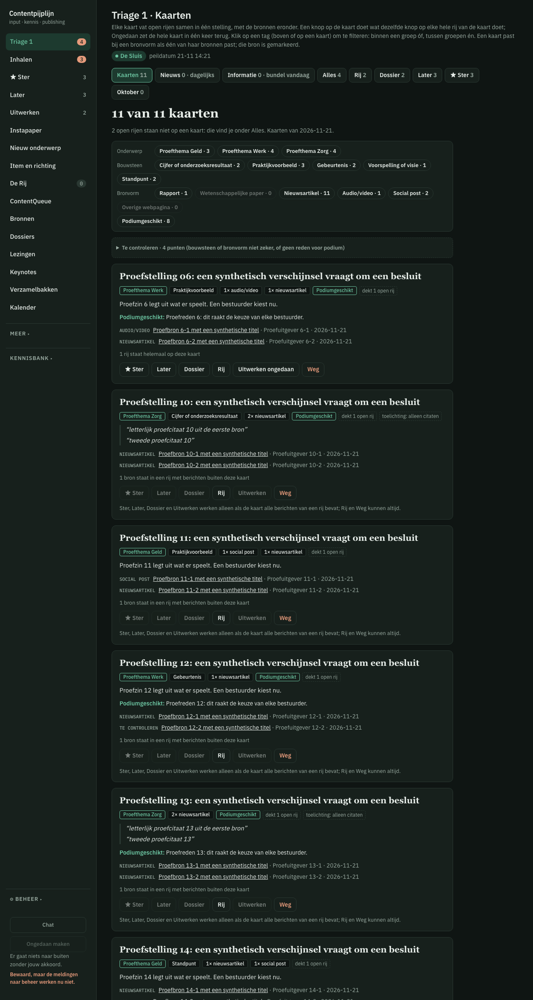
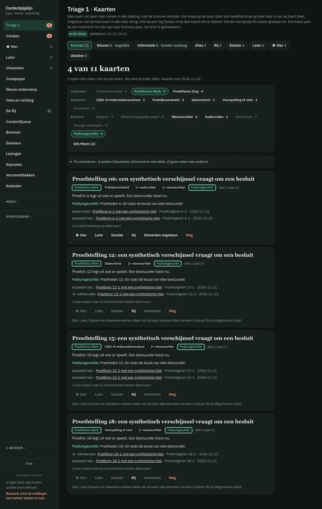
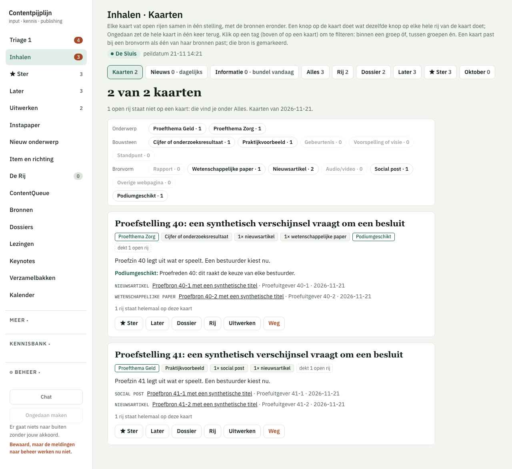
Op elk scherm waar het kan een Rij-knop met opmerkingveld. Waar het nog niet kan, staat één zin uitleg; die schermen volgen in een aparte stap (Inspiratie en Thema's eerst).
Sjabloon ja op Rij met opmerking overal (#992)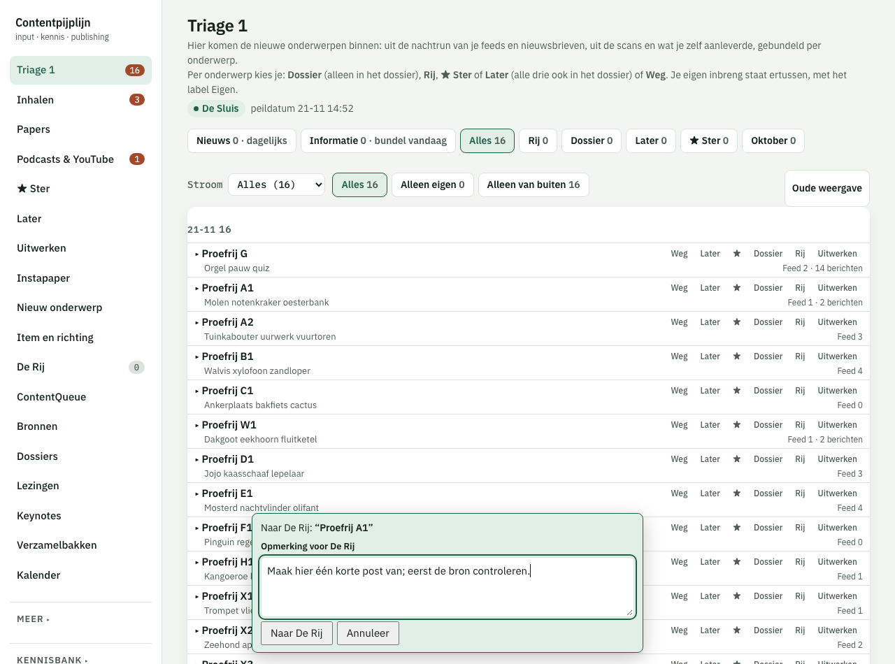
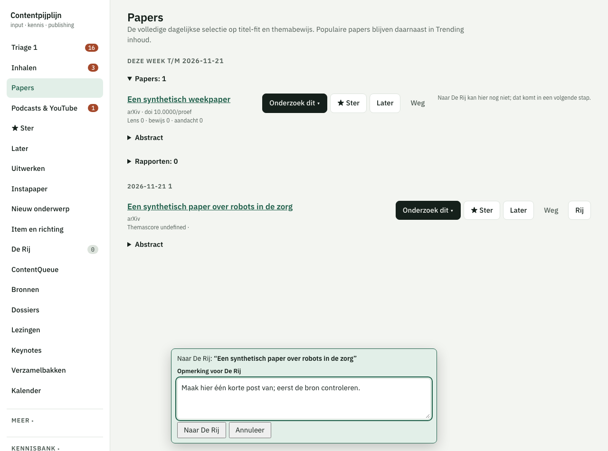
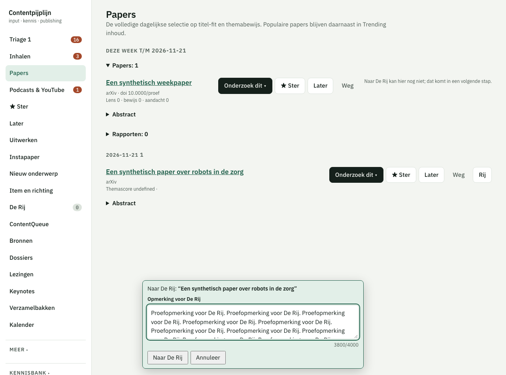
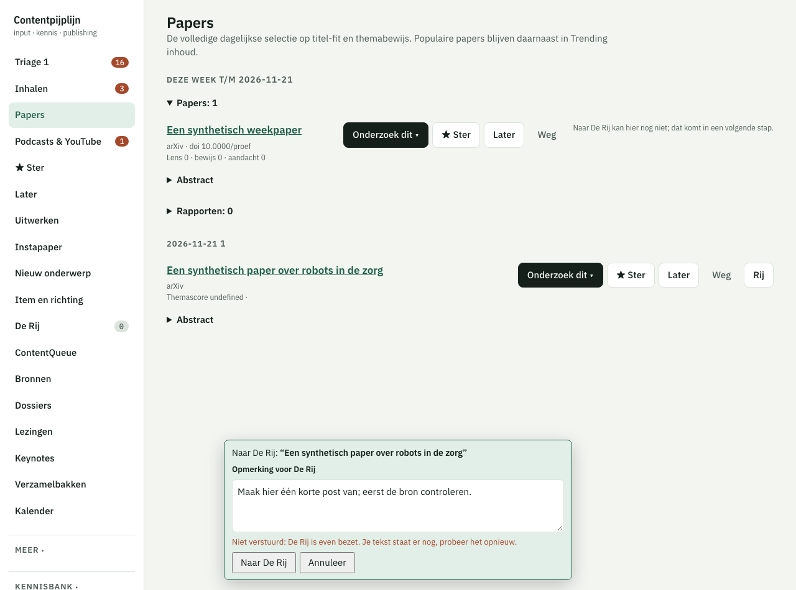
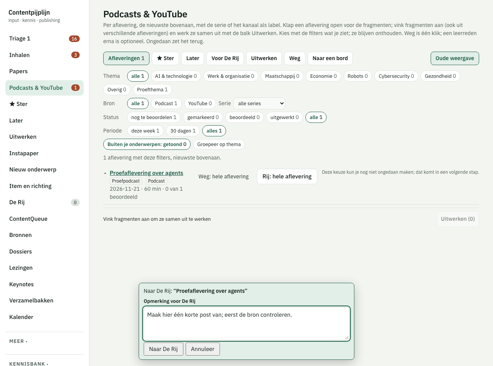
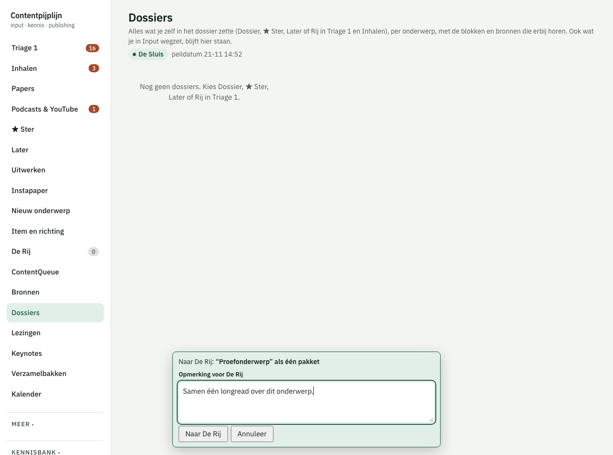
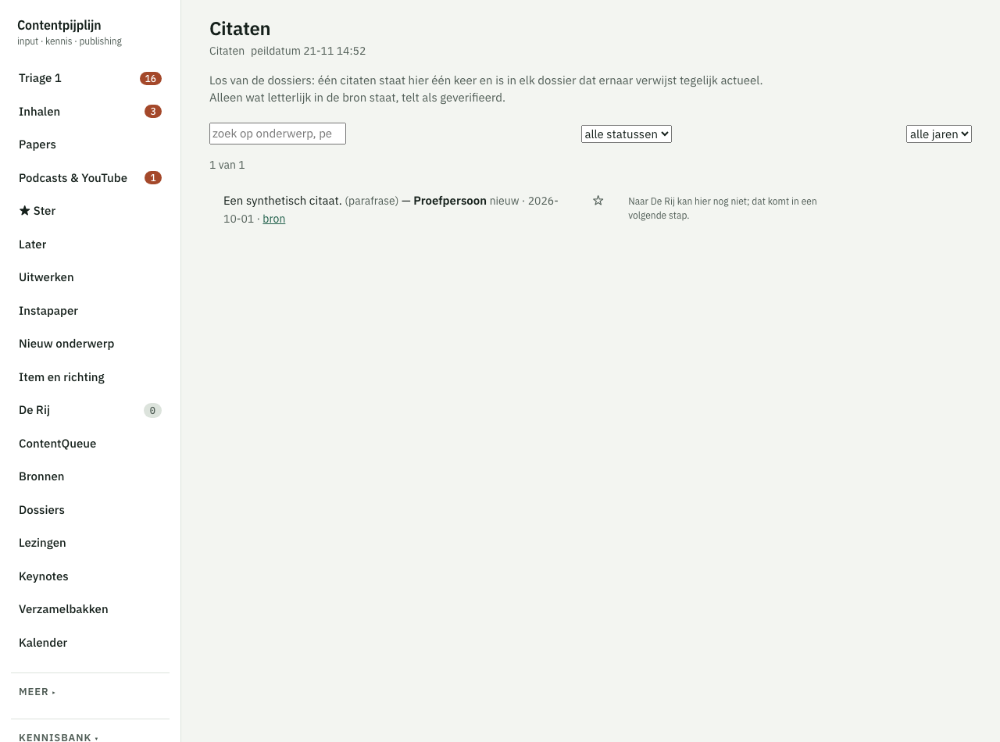